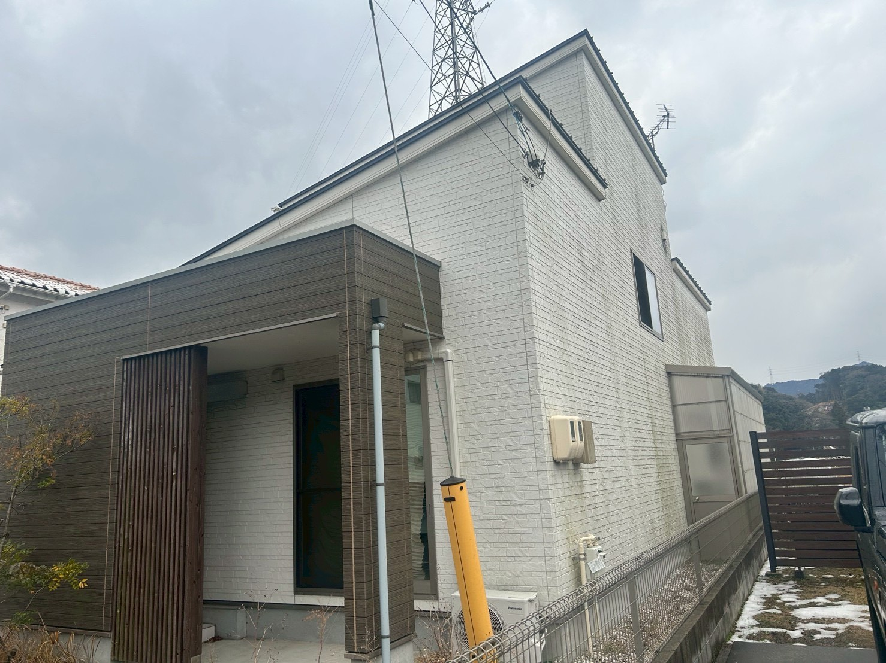
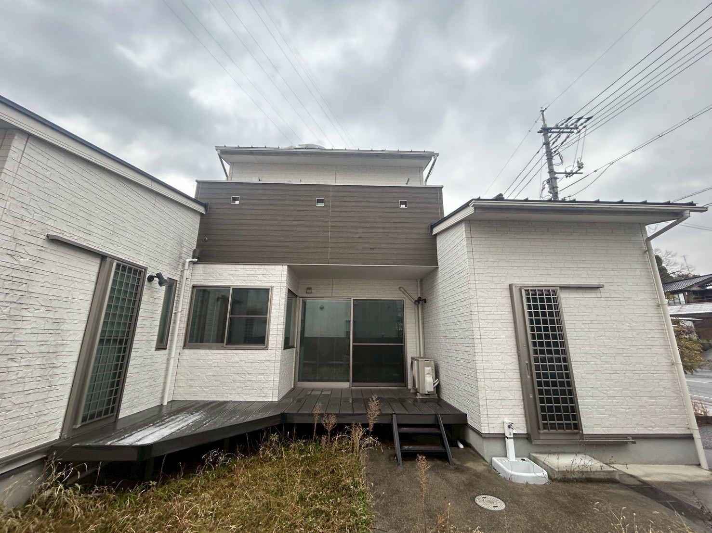
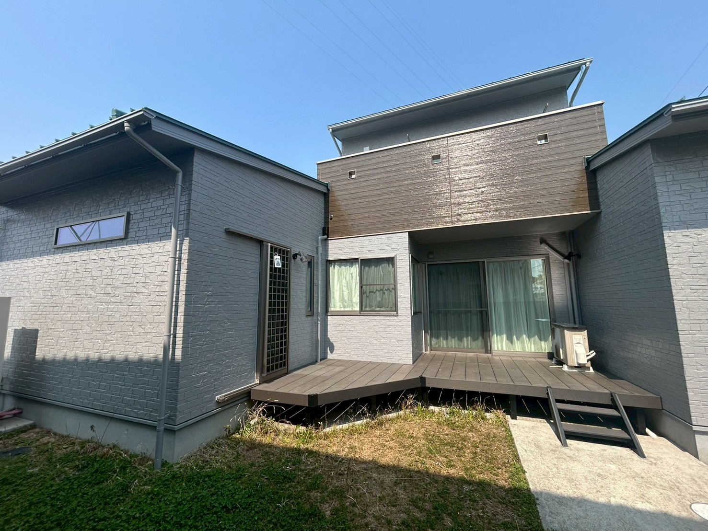
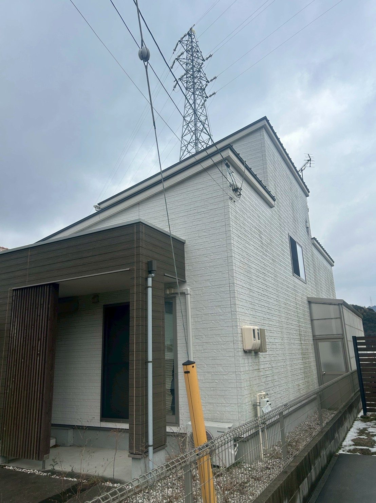
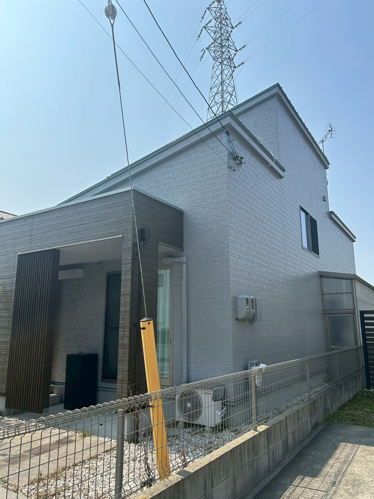
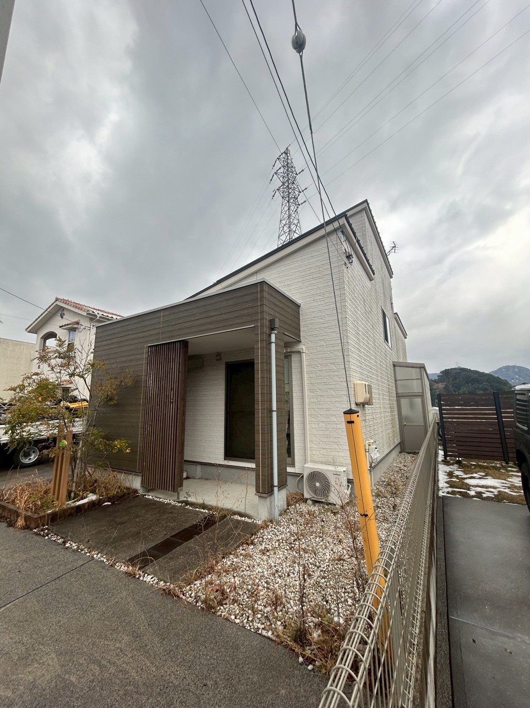
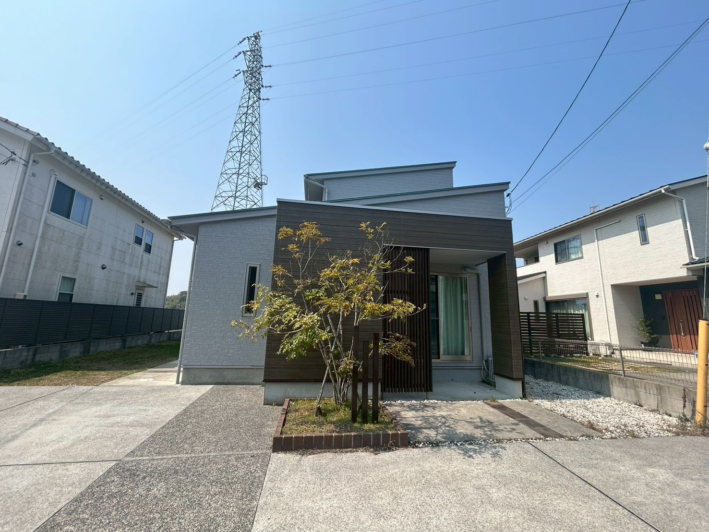
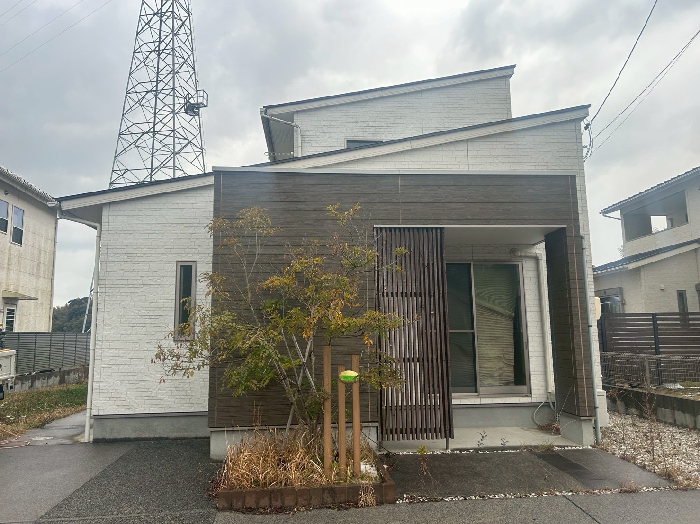
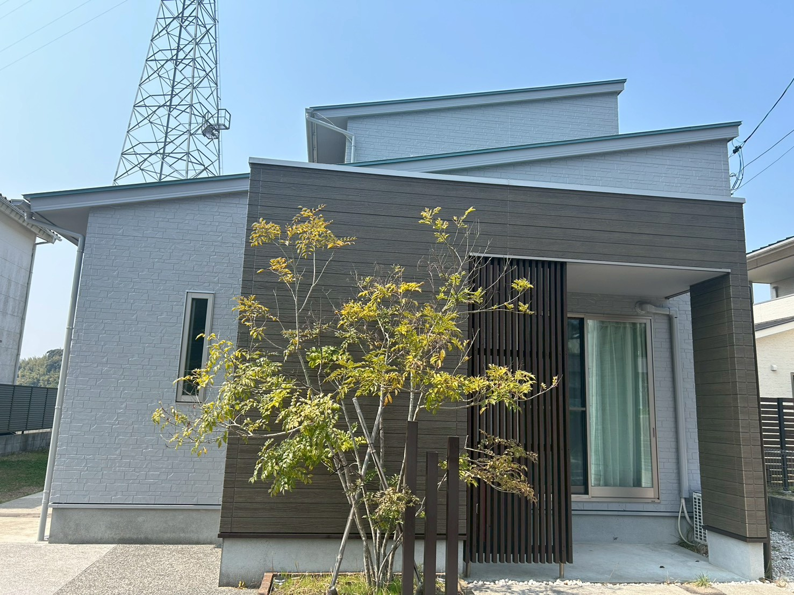

— Transformation
Before & After ビフォア／アフター
正面・裏側・サイド・玄関——5つのアングルから、
塗装前と塗装後の変化をご確認ください。
Before

— 01 ／ 正面（塗装前）
After

— 01 ／ 正面（塗装後）
Before

— 02 ／ 裏側・ウッドデッキ側（塗装前）
After

— 02 ／ 裏側・ウッドデッキ側（塗装後）
Before

— 03 ／ 左サイド（塗装前）
After

— 03 ／ 左サイド（塗装後）
Before

— 04 ／ 玄関アプローチ（塗装前）
After

— 04 ／ 玄関アプローチ（塗装後）
Before

— 05 ／ 玄関まわり（塗装前）
After

— 05 ／ 玄関まわり（塗装後）